library(multinma)
options(mc.cores = parallel::detectCores())#> For execution on a local, multicore CPU with excess RAM we recommend calling
#> options(mc.cores = parallel::detectCores())
#>
#> Attaching package: 'multinma'
#> The following objects are masked from 'package:stats':
#>
#> dgamma, pgamma, qgammaThis vignette describes the analysis of data on the mean off-time reduction in patients given dopamine agonists as adjunct therapy in Parkinson’s disease, in a network of 7 trials of 4 active drugs plus placebo (Dias et al. 2011). The data are available in this package as parkinsons:
head(parkinsons)
#> studyn trtn y se n diff se_diff
#> 1 1 1 -1.22 0.504 54 NA 0.504
#> 2 1 3 -1.53 0.439 95 -0.31 0.668
#> 3 2 1 -0.70 0.282 172 NA 0.282
#> 4 2 2 -2.40 0.258 173 -1.70 0.382
#> 5 3 1 -0.30 0.505 76 NA 0.505
#> 6 3 2 -2.60 0.510 71 -2.30 0.718We consider analysing these data in three separate ways:
- Using arm-based data (means
yand corresponding standard errorsse); - Using contrast-based data (mean differences
diffand corresponding standard errorsse_diff); - A combination of the two, where some studies contribute arm-based data, and other contribute contrast-based data.
Note: In this case, with Normal likelihoods for both arms and contrasts, we will see that the three analyses give identical results. In general, unless the arm-based likelihood is Normal, results from a model using a contrast-based likelihood will not exactly match those from a model using an arm-based likelihood, since the contrast-based Normal likelihood is only an approximation. Similarity of results depends on the suitability of the Normal approximation, which may not always be appropriate - e.g. with a small number of events or small sample size for a binary outcome. The use of an arm-based likelihood (sometimes called an “exact” likelihood) is therefore preferable where possible in general.
Analysis of arm-based data
We begin with an analysis of the arm-based data - means and standard errors.
Setting up the network
We have arm-level continuous data giving the mean off-time reduction (y) and standard error (se) in each arm. We use the function set_agd_arm() to set up the network.
arm_net <- set_agd_arm(parkinsons,
study = studyn,
trt = trtn,
y = y,
se = se,
sample_size = n)
arm_net
#> A network with 7 AgD studies (arm-based).
#>
#> ------------------------------------------------------- AgD studies (arm-based) ----
#> Study Treatments
#> 1 2: 1 | 3
#> 2 2: 1 | 2
#> 3 3: 1 | 2 | 4
#> 4 2: 3 | 4
#> 5 2: 3 | 4
#> 6 2: 4 | 5
#> 7 2: 4 | 5
#>
#> Outcome type: continuous
#> ------------------------------------------------------------------------------------
#> Total number of treatments: 5
#> Total number of studies: 7
#> Reference treatment is: 4
#> Network is connectedWe let treatment 4 be set by default as the network reference treatment, since this results in considerably improved sampling efficiency over choosing treatment 1 as the network reference. The sample_size argument is optional, but enables the nodes to be weighted by sample size in the network plot.
Plot the network structure.
plot(arm_net, weight_edges = TRUE, weight_nodes = TRUE)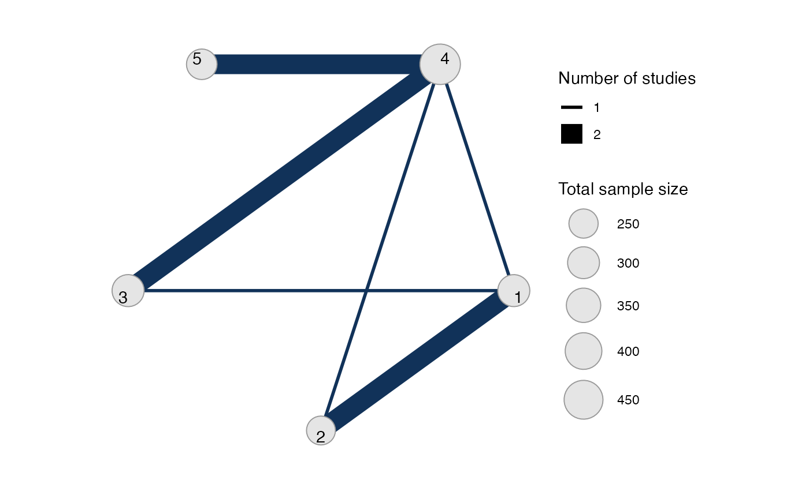
Meta-analysis models
We fit both fixed effect (FE) and random effects (RE) models.
Fixed effect meta-analysis
First, we fit a fixed effect model using the nma() function with trt_effects = "fixed". We use \(\mathrm{N}(0, 100^2)\) prior distributions for the treatment effects \(d_k\) and study-specific intercepts \(\mu_j\). We can examine the range of parameter values implied by these prior distributions with the summary() method:
summary(normal(scale = 100))
#> A Normal prior distribution: location = 0, scale = 100.
#> 50% of the prior density lies between -67.45 and 67.45.
#> 95% of the prior density lies between -196 and 196.The model is fitted using the nma() function.
arm_fit_FE <- nma(arm_net,
trt_effects = "fixed",
prior_intercept = normal(scale = 100),
prior_trt = normal(scale = 10))
#> Note: Setting "4" as the network reference treatment.Basic parameter summaries are given by the print() method:
arm_fit_FE
#> A fixed effects NMA with a normal likelihood (identity link).
#> Inference for Stan model: normal.
#> 4 chains, each with iter=2000; warmup=1000; thin=1;
#> post-warmup draws per chain=1000, total post-warmup draws=4000.
#>
#> mean se_mean sd 2.5% 25% 50% 75% 97.5% n_eff Rhat
#> d[1] 0.53 0.01 0.46 -0.38 0.21 0.53 0.84 1.42 1624 1
#> d[2] -1.29 0.01 0.50 -2.27 -1.63 -1.29 -0.95 -0.30 1731 1
#> d[3] 0.03 0.01 0.32 -0.60 -0.18 0.04 0.24 0.66 2253 1
#> d[5] -0.30 0.00 0.21 -0.71 -0.44 -0.30 -0.17 0.10 2401 1
#> lp__ -6.63 0.06 2.35 -12.04 -7.99 -6.28 -4.92 -3.10 1719 1
#>
#> Samples were drawn using NUTS(diag_e) at Fri Jan 7 08:49:04 2022.
#> For each parameter, n_eff is a crude measure of effective sample size,
#> and Rhat is the potential scale reduction factor on split chains (at
#> convergence, Rhat=1).By default, summaries of the study-specific intercepts \(\mu_j\) are hidden, but could be examined by changing the pars argument:
The prior and posterior distributions can be compared visually using the plot_prior_posterior() function:
plot_prior_posterior(arm_fit_FE)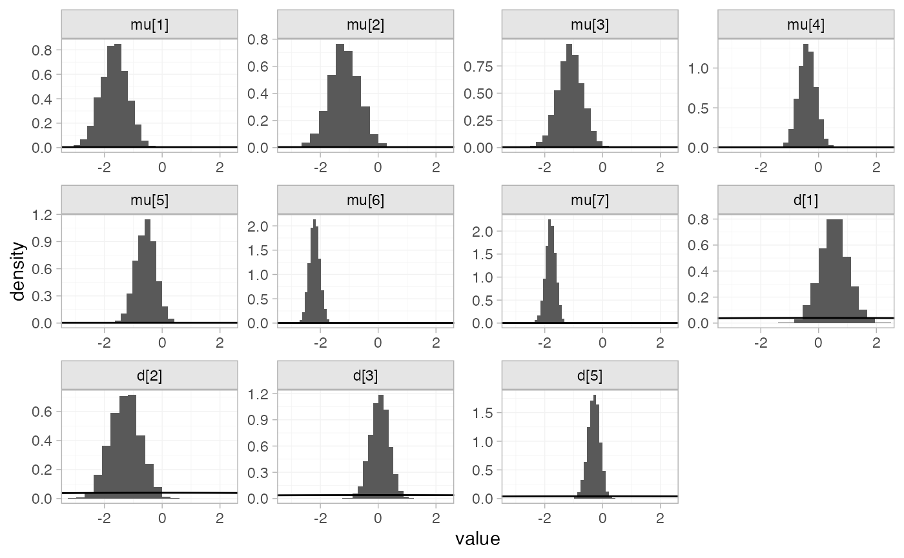
Random effects meta-analysis
We now fit a random effects model using the nma() function with trt_effects = "random". Again, we use \(\mathrm{N}(0, 100^2)\) prior distributions for the treatment effects \(d_k\) and study-specific intercepts \(\mu_j\), and we additionally use a \(\textrm{half-N}(5^2)\) prior for the heterogeneity standard deviation \(\tau\). We can examine the range of parameter values implied by these prior distributions with the summary() method:
summary(normal(scale = 100))
#> A Normal prior distribution: location = 0, scale = 100.
#> 50% of the prior density lies between -67.45 and 67.45.
#> 95% of the prior density lies between -196 and 196.
summary(half_normal(scale = 5))
#> A half-Normal prior distribution: location = 0, scale = 5.
#> 50% of the prior density lies between 0 and 3.37.
#> 95% of the prior density lies between 0 and 9.8.Fitting the RE model
arm_fit_RE <- nma(arm_net,
seed = 379394727,
trt_effects = "random",
prior_intercept = normal(scale = 100),
prior_trt = normal(scale = 100),
prior_het = half_normal(scale = 5),
adapt_delta = 0.99)
#> Note: Setting "4" as the network reference treatment.
#> Warning: There were 1 divergent transitions after warmup. See
#> https://mc-stan.org/misc/warnings.html#divergent-transitions-after-warmup
#> to find out why this is a problem and how to eliminate them.
#> Warning: Examine the pairs() plot to diagnose sampling problemsWe do see a small number of divergent transition errors, which cannot simply be removed by increasing the value of the adapt_delta argument (by default set to 0.95 for RE models). To diagnose, we use the pairs() method to investigate where in the posterior distribution these divergences are happening (indicated by red crosses):
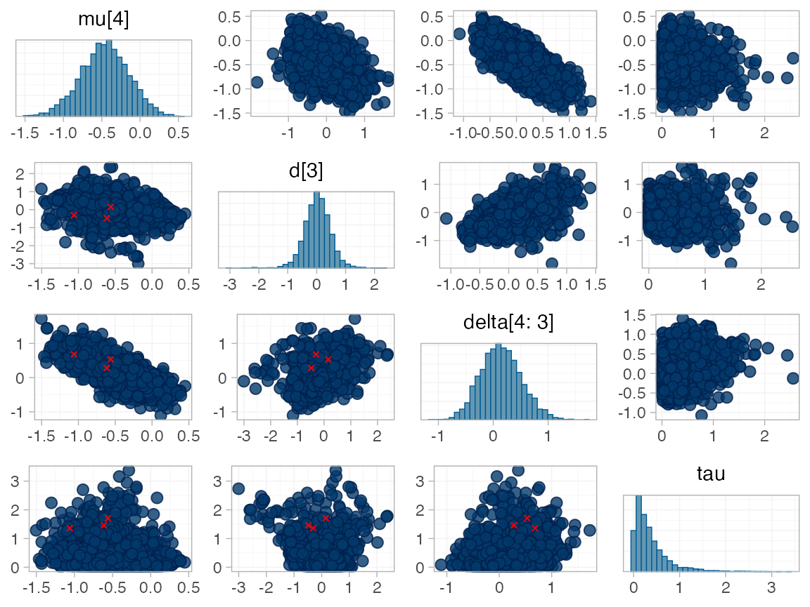
The divergent transitions occur in the upper tail of the heterogeneity standard deviation. In this case, with only a small number of studies, there is not very much information to estimate the heterogeneity standard deviation and the prior distribution may be too heavy-tailed. We could consider a more informative prior distribution for the heterogeneity variance to aid estimation.
Basic parameter summaries are given by the print() method:
arm_fit_RE
#> A random effects NMA with a normal likelihood (identity link).
#> Inference for Stan model: normal.
#> 4 chains, each with iter=2000; warmup=1000; thin=1;
#> post-warmup draws per chain=1000, total post-warmup draws=4000.
#>
#> mean se_mean sd 2.5% 25% 50% 75% 97.5% n_eff Rhat
#> d[1] 0.55 0.01 0.61 -0.65 0.16 0.54 0.91 1.73 1990 1.00
#> d[2] -1.29 0.02 0.70 -2.66 -1.72 -1.29 -0.86 0.09 1968 1.00
#> d[3] 0.03 0.01 0.45 -0.83 -0.24 0.03 0.31 0.95 1921 1.00
#> d[5] -0.30 0.01 0.44 -1.18 -0.51 -0.30 -0.10 0.58 1932 1.00
#> lp__ -12.88 0.10 3.62 -21.03 -15.18 -12.48 -10.28 -6.78 1268 1.00
#> tau 0.38 0.01 0.38 0.01 0.12 0.27 0.51 1.43 776 1.01
#>
#> Samples were drawn using NUTS(diag_e) at Fri Jan 7 08:49:17 2022.
#> For each parameter, n_eff is a crude measure of effective sample size,
#> and Rhat is the potential scale reduction factor on split chains (at
#> convergence, Rhat=1).By default, summaries of the study-specific intercepts \(\mu_j\) and study-specific relative effects \(\delta_{jk}\) are hidden, but could be examined by changing the pars argument:
The prior and posterior distributions can be compared visually using the plot_prior_posterior() function:
plot_prior_posterior(arm_fit_RE)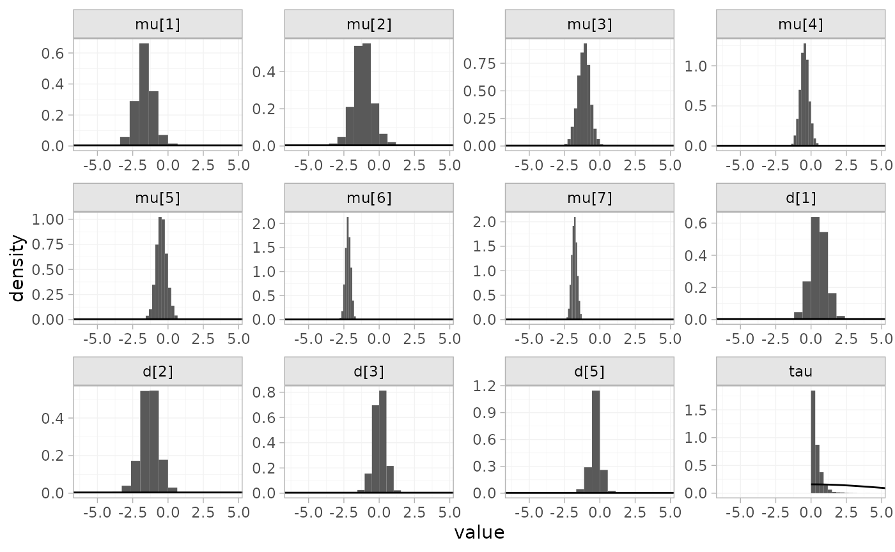
Model comparison
Model fit can be checked using the dic() function:
(arm_dic_FE <- dic(arm_fit_FE))
#> Residual deviance: 13.2 (on 15 data points)
#> pD: 10.9
#> DIC: 24.2
(arm_dic_RE <- dic(arm_fit_RE))
#> Residual deviance: 13.6 (on 15 data points)
#> pD: 12.4
#> DIC: 26Both models fit the data well, having posterior mean residual deviance close to the number of data points. The DIC is similar between models, so we choose the FE model based on parsimony.
We can also examine the residual deviance contributions with the corresponding plot() method.
plot(arm_dic_FE)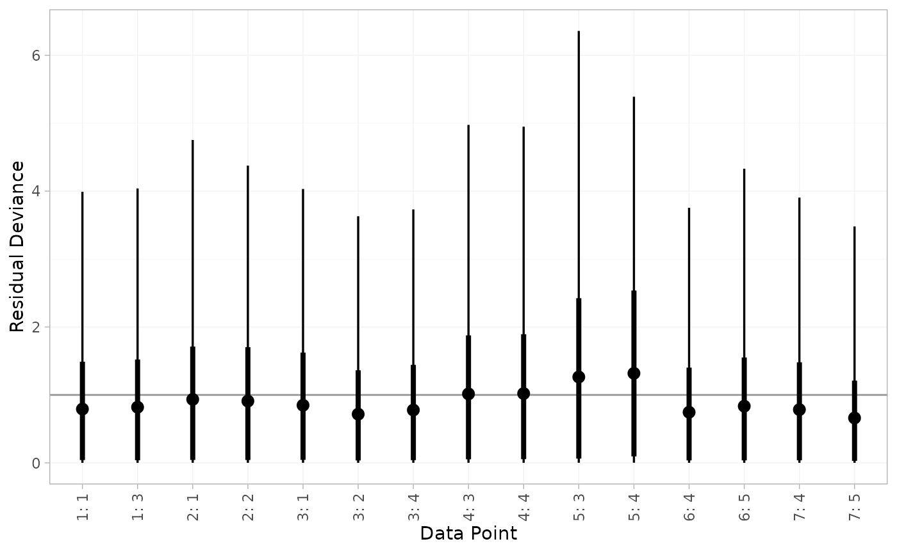
plot(arm_dic_RE)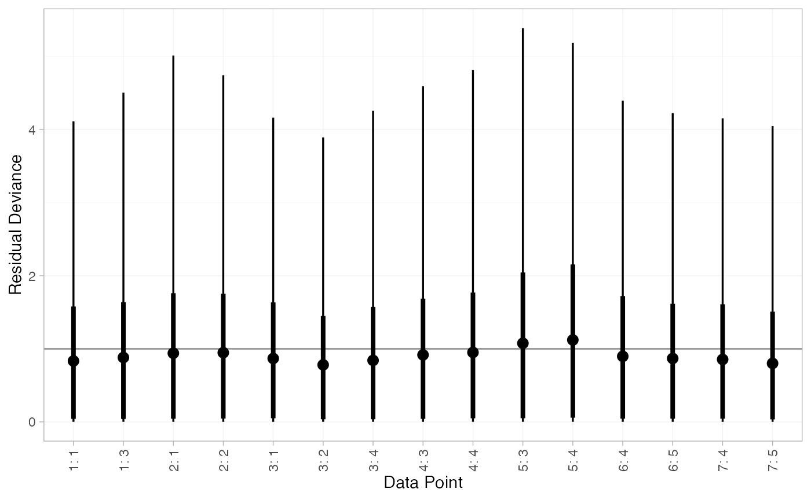
Further results
For comparison with Dias et al. (2011), we can produce relative effects against placebo using the relative_effects() function with trt_ref = 1:
(arm_releff_FE <- relative_effects(arm_fit_FE, trt_ref = 1))
#> mean sd 2.5% 25% 50% 75% 97.5% Bulk_ESS Tail_ESS Rhat
#> d[4] -0.53 0.46 -1.42 -0.84 -0.53 -0.21 0.38 1651 2196 1
#> d[2] -1.81 0.34 -2.49 -2.04 -1.81 -1.59 -1.15 5966 2868 1
#> d[3] -0.49 0.48 -1.41 -0.82 -0.50 -0.18 0.44 2452 2664 1
#> d[5] -0.83 0.51 -1.83 -1.17 -0.83 -0.48 0.16 1727 2595 1
plot(arm_releff_FE, ref_line = 0)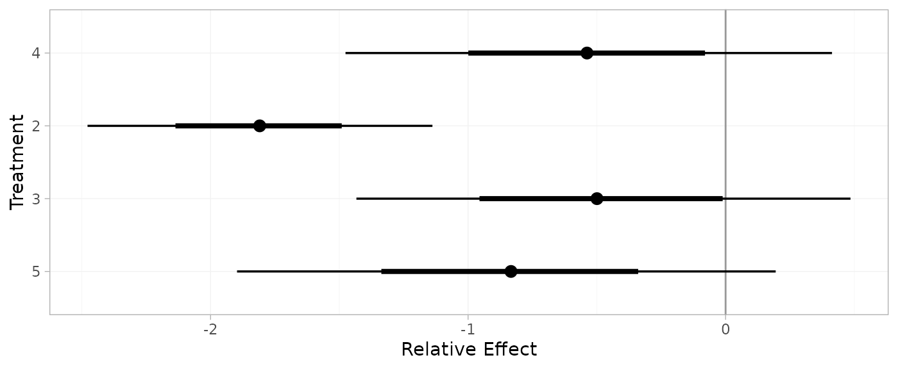
(arm_releff_RE <- relative_effects(arm_fit_RE, trt_ref = 1))
#> mean sd 2.5% 25% 50% 75% 97.5% Bulk_ESS Tail_ESS Rhat
#> d[4] -0.55 0.61 -1.73 -0.91 -0.54 -0.16 0.65 2066 2196 1
#> d[2] -1.84 0.51 -2.87 -2.12 -1.83 -1.54 -0.88 4112 2809 1
#> d[3] -0.51 0.63 -1.75 -0.89 -0.50 -0.12 0.73 3255 2872 1
#> d[5] -0.85 0.77 -2.38 -1.26 -0.83 -0.41 0.62 1917 1749 1
plot(arm_releff_RE, ref_line = 0)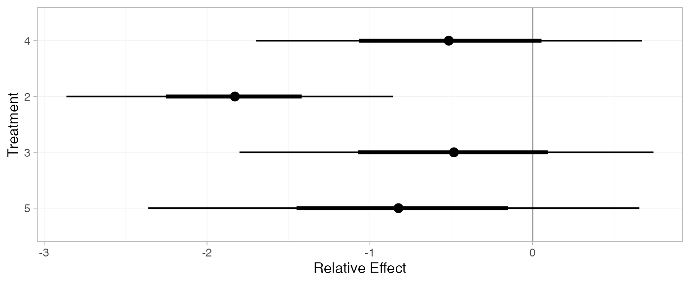
Following Dias et al. (2011), we produce absolute predictions of the mean off-time reduction on each treatment assuming a Normal distribution for the outcomes on treatment 1 (placebo) with mean \(-0.73\) and precision \(21\). We use the predict() method, where the baseline argument takes a distr() distribution object with which we specify the corresponding Normal distribution, and we specify trt_ref = 1 to indicate that the baseline distribution corresponds to treatment 1. (Strictly speaking, type = "response" is unnecessary here, since the identity link function was used.)
arm_pred_FE <- predict(arm_fit_FE,
baseline = distr(qnorm, mean = -0.73, sd = 21^-0.5),
type = "response",
trt_ref = 1)
arm_pred_FE
#> mean sd 2.5% 25% 50% 75% 97.5% Bulk_ESS Tail_ESS Rhat
#> pred[4] -1.25 0.51 -2.26 -1.61 -1.26 -0.91 -0.25 1857 2502 1
#> pred[1] -0.73 0.22 -1.16 -0.88 -0.73 -0.58 -0.29 3856 3973 1
#> pred[2] -2.54 0.40 -3.32 -2.82 -2.53 -2.27 -1.77 4862 3580 1
#> pred[3] -1.22 0.53 -2.24 -1.58 -1.23 -0.87 -0.17 2583 3165 1
#> pred[5] -1.56 0.56 -2.65 -1.94 -1.56 -1.18 -0.48 1862 2737 1
plot(arm_pred_FE)
arm_pred_RE <- predict(arm_fit_RE,
baseline = distr(qnorm, mean = -0.73, sd = 21^-0.5),
type = "response",
trt_ref = 1)
arm_pred_RE
#> mean sd 2.5% 25% 50% 75% 97.5% Bulk_ESS Tail_ESS Rhat
#> pred[4] -1.27 0.65 -2.53 -1.68 -1.26 -0.86 -0.04 2233 2423 1
#> pred[1] -0.73 0.22 -1.16 -0.87 -0.73 -0.58 -0.30 4018 3891 1
#> pred[2] -2.57 0.56 -3.65 -2.90 -2.56 -2.22 -1.50 4130 2500 1
#> pred[3] -1.24 0.67 -2.53 -1.64 -1.23 -0.82 0.02 3426 3011 1
#> pred[5] -1.57 0.80 -3.17 -2.03 -1.57 -1.10 -0.09 2004 1893 1
plot(arm_pred_RE)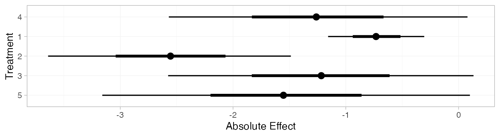
If the baseline argument is omitted, predictions of mean off-time reduction will be produced for every study in the network based on their estimated baseline response \(\mu_j\):
arm_pred_FE_studies <- predict(arm_fit_FE, type = "response")
arm_pred_FE_studies
#> ---------------------------------------------------------------------- Study: 1 ----
#>
#> mean sd 2.5% 25% 50% 75% 97.5% Bulk_ESS Tail_ESS Rhat
#> pred[1: 4] -1.64 0.45 -2.52 -1.94 -1.63 -1.33 -0.76 2234 2589 1
#> pred[1: 1] -1.11 0.42 -1.99 -1.39 -1.10 -0.83 -0.31 3763 3473 1
#> pred[1: 2] -2.93 0.51 -3.97 -3.25 -2.92 -2.57 -1.96 3963 3300 1
#> pred[1: 3] -1.60 0.39 -2.37 -1.87 -1.61 -1.33 -0.85 4325 3198 1
#> pred[1: 5] -1.94 0.50 -2.92 -2.28 -1.93 -1.60 -0.97 2299 2607 1
#>
#> ---------------------------------------------------------------------- Study: 2 ----
#>
#> mean sd 2.5% 25% 50% 75% 97.5% Bulk_ESS Tail_ESS Rhat
#> pred[2: 4] -1.16 0.49 -2.10 -1.49 -1.16 -0.83 -0.19 1586 2331 1
#> pred[2: 1] -0.63 0.27 -1.14 -0.82 -0.64 -0.46 -0.10 4997 3648 1
#> pred[2: 2] -2.45 0.25 -2.94 -2.62 -2.45 -2.28 -1.95 4711 3519 1
#> pred[2: 3] -1.13 0.51 -2.10 -1.47 -1.13 -0.78 -0.12 2322 2912 1
#> pred[2: 5] -1.46 0.54 -2.52 -1.83 -1.47 -1.10 -0.40 1720 2486 1
#>
#> ---------------------------------------------------------------------- Study: 3 ----
#>
#> mean sd 2.5% 25% 50% 75% 97.5% Bulk_ESS Tail_ESS Rhat
#> pred[3: 4] -1.11 0.41 -1.91 -1.38 -1.11 -0.84 -0.31 2063 2604 1
#> pred[3: 1] -0.59 0.36 -1.31 -0.82 -0.59 -0.34 0.10 4798 3478 1
#> pred[3: 2] -2.40 0.38 -3.17 -2.66 -2.39 -2.14 -1.66 4721 3589 1
#> pred[3: 3] -1.08 0.46 -1.98 -1.40 -1.08 -0.77 -0.20 2916 3219 1
#> pred[3: 5] -1.42 0.46 -2.35 -1.72 -1.41 -1.10 -0.55 2148 2783 1
#>
#> ---------------------------------------------------------------------- Study: 4 ----
#>
#> mean sd 2.5% 25% 50% 75% 97.5% Bulk_ESS Tail_ESS Rhat
#> pred[4: 4] -0.39 0.29 -0.96 -0.58 -0.39 -0.20 0.17 2717 2565 1
#> pred[4: 1] 0.13 0.50 -0.84 -0.20 0.14 0.48 1.09 2260 2870 1
#> pred[4: 2] -1.68 0.54 -2.76 -2.05 -1.67 -1.31 -0.63 2359 3246 1
#> pred[4: 3] -0.36 0.24 -0.83 -0.52 -0.35 -0.19 0.11 5150 3423 1
#> pred[4: 5] -0.70 0.36 -1.38 -0.93 -0.70 -0.46 0.01 2774 2712 1
#>
#> ---------------------------------------------------------------------- Study: 5 ----
#>
#> mean sd 2.5% 25% 50% 75% 97.5% Bulk_ESS Tail_ESS Rhat
#> pred[5: 4] -0.55 0.33 -1.19 -0.78 -0.55 -0.32 0.10 3031 3130 1
#> pred[5: 1] -0.03 0.53 -1.08 -0.39 -0.02 0.34 1.00 2498 2749 1
#> pred[5: 2] -1.84 0.57 -2.97 -2.22 -1.83 -1.46 -0.75 2502 2669 1
#> pred[5: 3] -0.52 0.30 -1.09 -0.72 -0.52 -0.31 0.06 5268 3171 1
#> pred[5: 5] -0.85 0.39 -1.61 -1.11 -0.86 -0.59 -0.09 2930 3007 1
#>
#> ---------------------------------------------------------------------- Study: 6 ----
#>
#> mean sd 2.5% 25% 50% 75% 97.5% Bulk_ESS Tail_ESS Rhat
#> pred[6: 4] -2.20 0.17 -2.53 -2.31 -2.20 -2.08 -1.85 2763 2659 1
#> pred[6: 1] -1.67 0.49 -2.62 -2.00 -1.66 -1.34 -0.71 1733 2462 1
#> pred[6: 2] -3.48 0.53 -4.51 -3.86 -3.49 -3.13 -2.44 1875 2820 1
#> pred[6: 3] -2.16 0.36 -2.88 -2.40 -2.16 -1.92 -1.46 2467 2783 1
#> pred[6: 5] -2.50 0.17 -2.82 -2.61 -2.50 -2.39 -2.16 5210 3246 1
#>
#> ---------------------------------------------------------------------- Study: 7 ----
#>
#> mean sd 2.5% 25% 50% 75% 97.5% Bulk_ESS Tail_ESS Rhat
#> pred[7: 4] -1.80 0.18 -2.14 -1.92 -1.80 -1.68 -1.45 3269 2777 1
#> pred[7: 1] -1.27 0.49 -2.24 -1.60 -1.26 -0.93 -0.32 1679 2193 1
#> pred[7: 2] -3.09 0.53 -4.13 -3.44 -3.09 -2.72 -2.03 1833 2704 1
#> pred[7: 3] -1.77 0.36 -2.47 -2.00 -1.77 -1.53 -1.04 2388 2556 1
#> pred[7: 5] -2.10 0.20 -2.49 -2.24 -2.10 -1.97 -1.72 4280 3521 1
plot(arm_pred_FE_studies)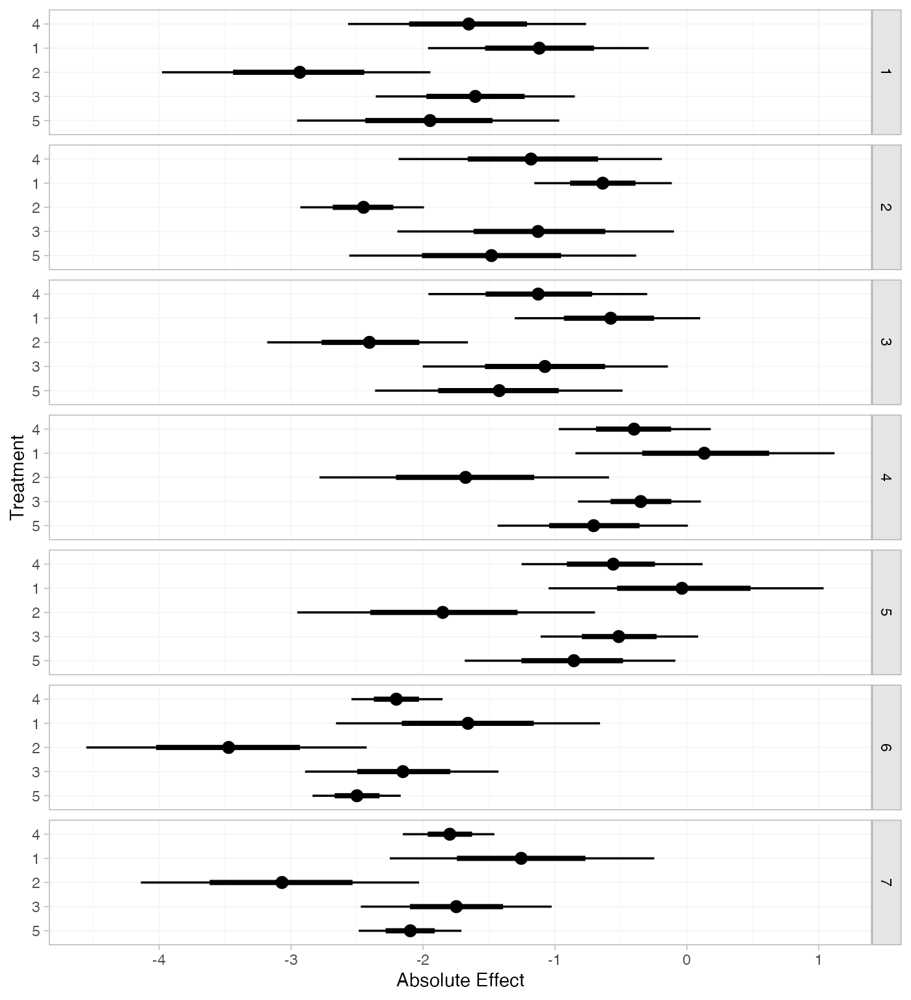
We can also produce treatment rankings, rank probabilities, and cumulative rank probabilities.
(arm_ranks <- posterior_ranks(arm_fit_FE))
#> mean sd 2.5% 25% 50% 75% 97.5% Bulk_ESS Tail_ESS Rhat
#> rank[4] 3.51 0.70 2 3 3 4 5 2141 NA 1
#> rank[1] 4.66 0.75 2 5 5 5 5 2219 NA 1
#> rank[2] 1.05 0.25 1 1 1 1 2 3106 3099 1
#> rank[3] 3.51 0.91 2 3 4 4 5 2884 NA 1
#> rank[5] 2.26 0.65 1 2 2 2 4 2386 2538 1
plot(arm_ranks)
(arm_rankprobs <- posterior_rank_probs(arm_fit_FE))
#> p_rank[1] p_rank[2] p_rank[3] p_rank[4] p_rank[5]
#> d[4] 0.00 0.04 0.49 0.39 0.08
#> d[1] 0.00 0.04 0.06 0.11 0.79
#> d[2] 0.96 0.04 0.00 0.00 0.00
#> d[3] 0.00 0.16 0.28 0.44 0.12
#> d[5] 0.04 0.73 0.17 0.05 0.01
plot(arm_rankprobs)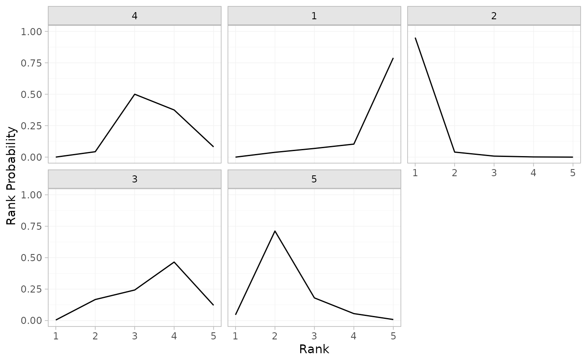
(arm_cumrankprobs <- posterior_rank_probs(arm_fit_FE, cumulative = TRUE))
#> p_rank[1] p_rank[2] p_rank[3] p_rank[4] p_rank[5]
#> d[4] 0.00 0.04 0.53 0.92 1
#> d[1] 0.00 0.04 0.10 0.21 1
#> d[2] 0.96 0.99 1.00 1.00 1
#> d[3] 0.00 0.16 0.44 0.88 1
#> d[5] 0.04 0.77 0.94 0.99 1
plot(arm_cumrankprobs)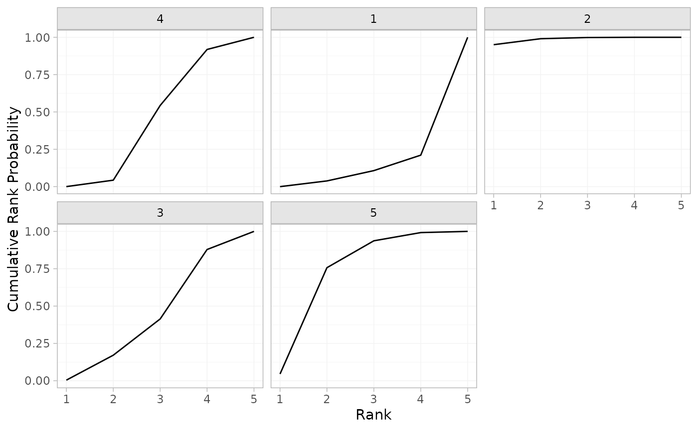
Analysis of contrast-based data
We now perform an analysis using the contrast-based data (mean differences and standard errors).
Setting up the network
With contrast-level data giving the mean difference in off-time reduction (diff) and standard error (se_diff), we use the function set_agd_contrast() to set up the network.
contr_net <- set_agd_contrast(parkinsons,
study = studyn,
trt = trtn,
y = diff,
se = se_diff,
sample_size = n)
contr_net
#> A network with 7 AgD studies (contrast-based).
#>
#> -------------------------------------------------- AgD studies (contrast-based) ----
#> Study Treatments
#> 1 2: 1 | 3
#> 2 2: 1 | 2
#> 3 3: 1 | 2 | 4
#> 4 2: 3 | 4
#> 5 2: 3 | 4
#> 6 2: 4 | 5
#> 7 2: 4 | 5
#>
#> Outcome type: continuous
#> ------------------------------------------------------------------------------------
#> Total number of treatments: 5
#> Total number of studies: 7
#> Reference treatment is: 4
#> Network is connectedThe sample_size argument is optional, but enables the nodes to be weighted by sample size in the network plot.
Plot the network structure.
plot(contr_net, weight_edges = TRUE, weight_nodes = TRUE)
Meta-analysis models
We fit both fixed effect (FE) and random effects (RE) models.
Fixed effect meta-analysis
First, we fit a fixed effect model using the nma() function with trt_effects = "fixed". We use \(\mathrm{N}(0, 100^2)\) prior distributions for the treatment effects \(d_k\). We can examine the range of parameter values implied by these prior distributions with the summary() method:
summary(normal(scale = 100))
#> A Normal prior distribution: location = 0, scale = 100.
#> 50% of the prior density lies between -67.45 and 67.45.
#> 95% of the prior density lies between -196 and 196.The model is fitted using the nma() function.
contr_fit_FE <- nma(contr_net,
trt_effects = "fixed",
prior_trt = normal(scale = 100))
#> Note: Setting "4" as the network reference treatment.Basic parameter summaries are given by the print() method:
contr_fit_FE
#> A fixed effects NMA with a normal likelihood (identity link).
#> Inference for Stan model: normal.
#> 4 chains, each with iter=2000; warmup=1000; thin=1;
#> post-warmup draws per chain=1000, total post-warmup draws=4000.
#>
#> mean se_mean sd 2.5% 25% 50% 75% 97.5% n_eff Rhat
#> d[1] 0.51 0.01 0.49 -0.45 0.19 0.51 0.84 1.49 2164 1
#> d[2] -1.30 0.01 0.53 -2.31 -1.67 -1.29 -0.93 -0.27 2274 1
#> d[3] 0.04 0.01 0.32 -0.59 -0.18 0.04 0.26 0.65 2857 1
#> d[5] -0.30 0.00 0.21 -0.70 -0.44 -0.30 -0.16 0.12 3772 1
#> lp__ -3.16 0.04 1.41 -6.68 -3.86 -2.84 -2.11 -1.39 1572 1
#>
#> Samples were drawn using NUTS(diag_e) at Fri Jan 7 08:49:35 2022.
#> For each parameter, n_eff is a crude measure of effective sample size,
#> and Rhat is the potential scale reduction factor on split chains (at
#> convergence, Rhat=1).The prior and posterior distributions can be compared visually using the plot_prior_posterior() function:
plot_prior_posterior(contr_fit_FE)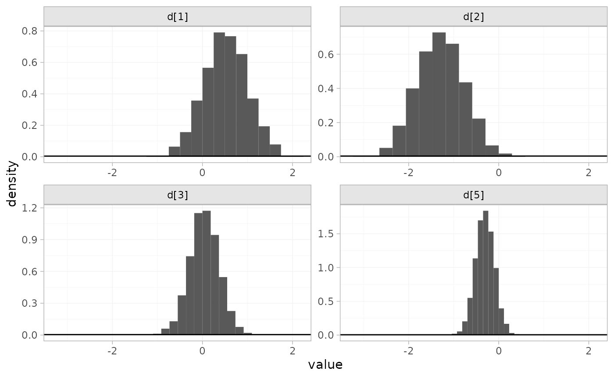
Random effects meta-analysis
We now fit a random effects model using the nma() function with trt_effects = "random". Again, we use \(\mathrm{N}(0, 100^2)\) prior distributions for the treatment effects \(d_k\), and we additionally use a \(\textrm{half-N}(5^2)\) prior for the heterogeneity standard deviation \(\tau\). We can examine the range of parameter values implied by these prior distributions with the summary() method:
summary(normal(scale = 100))
#> A Normal prior distribution: location = 0, scale = 100.
#> 50% of the prior density lies between -67.45 and 67.45.
#> 95% of the prior density lies between -196 and 196.
summary(half_normal(scale = 5))
#> A half-Normal prior distribution: location = 0, scale = 5.
#> 50% of the prior density lies between 0 and 3.37.
#> 95% of the prior density lies between 0 and 9.8.Fitting the RE model
contr_fit_RE <- nma(contr_net,
seed = 1150676438,
trt_effects = "random",
prior_trt = normal(scale = 100),
prior_het = half_normal(scale = 5),
adapt_delta = 0.99)
#> Note: Setting "4" as the network reference treatment.We do see a small number of divergent transition errors, which cannot simply be removed by increasing the value of the adapt_delta argument (by default set to 0.95 for RE models). To diagnose, we use the pairs() method to investigate where in the posterior distribution these divergences are happening (indicated by red crosses):
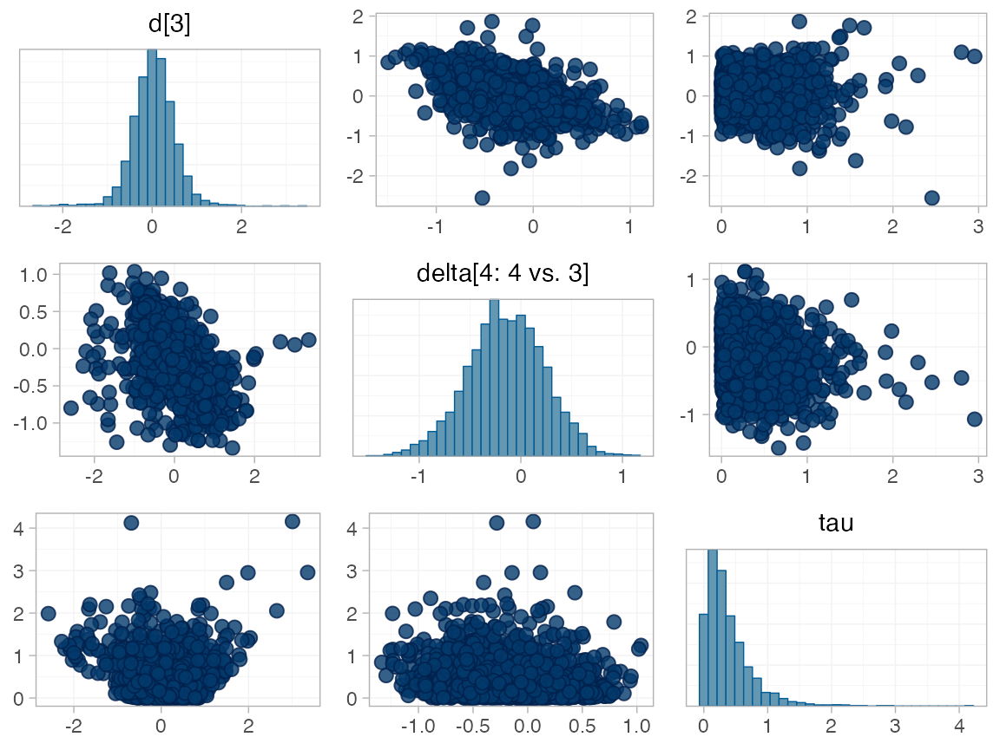
The divergent transitions occur in the upper tail of the heterogeneity standard deviation. In this case, with only a small number of studies, there is not very much information to estimate the heterogeneity standard deviation and the prior distribution may be too heavy-tailed. We could consider a more informative prior distribution for the heterogeneity variance to aid estimation.
Basic parameter summaries are given by the print() method:
contr_fit_RE
#> A random effects NMA with a normal likelihood (identity link).
#> Inference for Stan model: normal.
#> 4 chains, each with iter=2000; warmup=1000; thin=1;
#> post-warmup draws per chain=1000, total post-warmup draws=4000.
#>
#> mean se_mean sd 2.5% 25% 50% 75% 97.5% n_eff Rhat
#> d[1] 0.54 0.01 0.62 -0.66 0.17 0.53 0.91 1.76 2055 1
#> d[2] -1.30 0.02 0.72 -2.69 -1.73 -1.29 -0.88 0.09 2187 1
#> d[3] 0.04 0.01 0.47 -0.86 -0.24 0.04 0.32 0.93 2086 1
#> d[5] -0.29 0.01 0.40 -1.07 -0.50 -0.30 -0.09 0.53 1836 1
#> lp__ -8.18 0.08 2.86 -14.57 -9.85 -7.85 -6.17 -3.55 1217 1
#> tau 0.38 0.01 0.37 0.01 0.13 0.29 0.52 1.33 948 1
#>
#> Samples were drawn using NUTS(diag_e) at Fri Jan 7 08:49:42 2022.
#> For each parameter, n_eff is a crude measure of effective sample size,
#> and Rhat is the potential scale reduction factor on split chains (at
#> convergence, Rhat=1).By default, summaries of the study-specific relative effects \(\delta_{jk}\) are hidden, but could be examined by changing the pars argument:
The prior and posterior distributions can be compared visually using the plot_prior_posterior() function:
plot_prior_posterior(contr_fit_RE)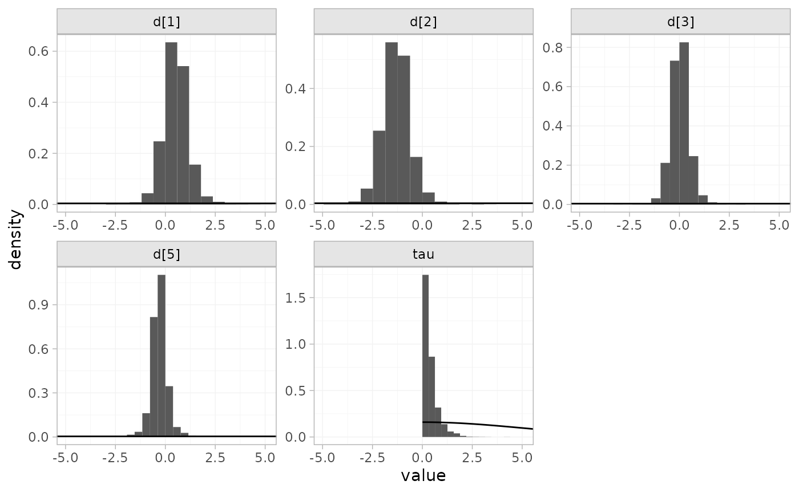
Model comparison
Model fit can be checked using the dic() function:
(contr_dic_FE <- dic(contr_fit_FE))
#> Residual deviance: 6.3 (on 8 data points)
#> pD: 4
#> DIC: 10.3
(contr_dic_RE <- dic(contr_fit_RE))
#> Residual deviance: 6.6 (on 8 data points)
#> pD: 5.4
#> DIC: 12Both models fit the data well, having posterior mean residual deviance close to the number of data points. The DIC is similar between models, so we choose the FE model based on parsimony.
We can also examine the residual deviance contributions with the corresponding plot() method.
plot(contr_dic_FE)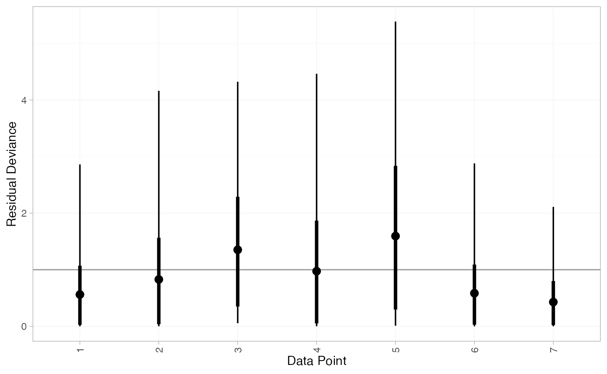
plot(contr_dic_RE)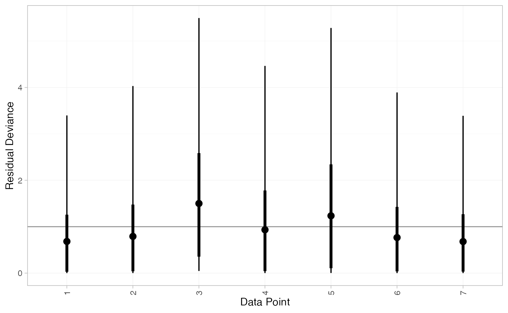
Further results
For comparison with Dias et al. (2011), we can produce relative effects against placebo using the relative_effects() function with trt_ref = 1:
(contr_releff_FE <- relative_effects(contr_fit_FE, trt_ref = 1))
#> mean sd 2.5% 25% 50% 75% 97.5% Bulk_ESS Tail_ESS Rhat
#> d[4] -0.51 0.49 -1.49 -0.84 -0.51 -0.19 0.45 2185 2594 1
#> d[2] -1.81 0.33 -2.46 -2.03 -1.81 -1.59 -1.17 5439 2816 1
#> d[3] -0.47 0.50 -1.48 -0.78 -0.46 -0.15 0.51 3016 2726 1
#> d[5] -0.81 0.53 -1.89 -1.16 -0.81 -0.46 0.21 2455 2499 1
plot(contr_releff_FE, ref_line = 0)
(contr_releff_RE <- relative_effects(contr_fit_RE, trt_ref = 1))
#> mean sd 2.5% 25% 50% 75% 97.5% Bulk_ESS Tail_ESS Rhat
#> d[4] -0.54 0.62 -1.76 -0.91 -0.53 -0.17 0.66 2167 1835 1
#> d[2] -1.84 0.49 -2.86 -2.12 -1.83 -1.56 -0.90 3458 2342 1
#> d[3] -0.50 0.63 -1.72 -0.89 -0.49 -0.11 0.74 3265 2484 1
#> d[5] -0.83 0.75 -2.27 -1.27 -0.81 -0.40 0.65 2150 1713 1
plot(contr_releff_RE, ref_line = 0)Following Dias et al. (2011), we produce absolute predictions of the mean off-time reduction on each treatment assuming a Normal distribution for the outcomes on treatment 1 (placebo) with mean \(-0.73\) and precision \(21\). We use the predict() method, where the baseline argument takes a distr() distribution object with which we specify the corresponding Normal distribution, and we specify trt_ref = 1 to indicate that the baseline distribution corresponds to treatment 1. (Strictly speaking, type = "response" is unnecessary here, since the identity link function was used.)
contr_pred_FE <- predict(contr_fit_FE,
baseline = distr(qnorm, mean = -0.73, sd = 21^-0.5),
type = "response",
trt_ref = 1)
contr_pred_FE
#> mean sd 2.5% 25% 50% 75% 97.5% Bulk_ESS Tail_ESS Rhat
#> pred[4] -1.24 0.53 -2.30 -1.60 -1.23 -0.87 -0.21 2329 2559 1
#> pred[1] -0.73 0.22 -1.16 -0.88 -0.73 -0.58 -0.30 3967 3603 1
#> pred[2] -2.54 0.40 -3.30 -2.81 -2.54 -2.28 -1.75 4680 3602 1
#> pred[3] -1.20 0.55 -2.29 -1.57 -1.18 -0.82 -0.14 3202 3030 1
#> pred[5] -1.54 0.57 -2.68 -1.92 -1.54 -1.14 -0.44 2550 2990 1
plot(contr_pred_FE)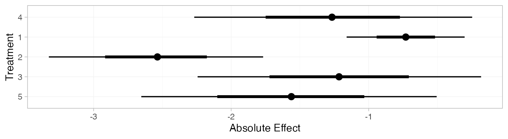
contr_pred_RE <- predict(contr_fit_RE,
baseline = distr(qnorm, mean = -0.73, sd = 21^-0.5),
type = "response",
trt_ref = 1)
contr_pred_RE
#> mean sd 2.5% 25% 50% 75% 97.5% Bulk_ESS Tail_ESS Rhat
#> pred[4] -1.27 0.66 -2.55 -1.67 -1.27 -0.88 -0.03 2250 1993 1
#> pred[1] -0.73 0.22 -1.16 -0.88 -0.73 -0.59 -0.30 3676 3583 1
#> pred[2] -2.57 0.54 -3.70 -2.89 -2.56 -2.25 -1.55 3441 2438 1
#> pred[3] -1.23 0.67 -2.53 -1.65 -1.22 -0.82 0.05 3349 2601 1
#> pred[5] -1.56 0.78 -3.06 -2.03 -1.56 -1.10 -0.01 2166 1880 1
plot(contr_pred_RE)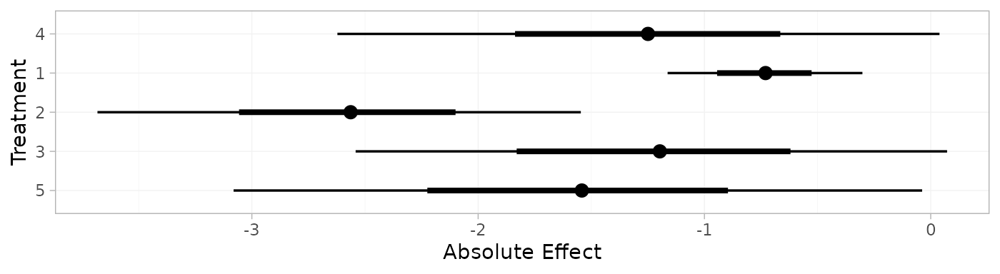
If the baseline argument is omitted an error will be raised, as there are no study baselines estimated in this network.
# Not run
predict(contr_fit_FE, type = "response")We can also produce treatment rankings, rank probabilities, and cumulative rank probabilities.
(contr_ranks <- posterior_ranks(contr_fit_FE))
#> mean sd 2.5% 25% 50% 75% 97.5% Bulk_ESS Tail_ESS Rhat
#> rank[4] 3.52 0.72 2 3 3 4 5 2461 NA 1
#> rank[1] 4.63 0.78 2 5 5 5 5 2477 NA 1
#> rank[2] 1.05 0.29 1 1 1 1 2 2698 2751 1
#> rank[3] 3.51 0.92 2 3 4 4 5 3706 NA 1
#> rank[5] 2.28 0.67 1 2 2 2 4 2916 2847 1
plot(contr_ranks)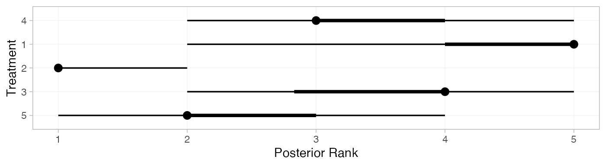
(contr_rankprobs <- posterior_rank_probs(contr_fit_FE))
#> p_rank[1] p_rank[2] p_rank[3] p_rank[4] p_rank[5]
#> d[4] 0.00 0.05 0.48 0.39 0.09
#> d[1] 0.00 0.04 0.07 0.12 0.78
#> d[2] 0.96 0.03 0.01 0.00 0.00
#> d[3] 0.00 0.17 0.27 0.44 0.12
#> d[5] 0.04 0.71 0.18 0.06 0.01
plot(contr_rankprobs)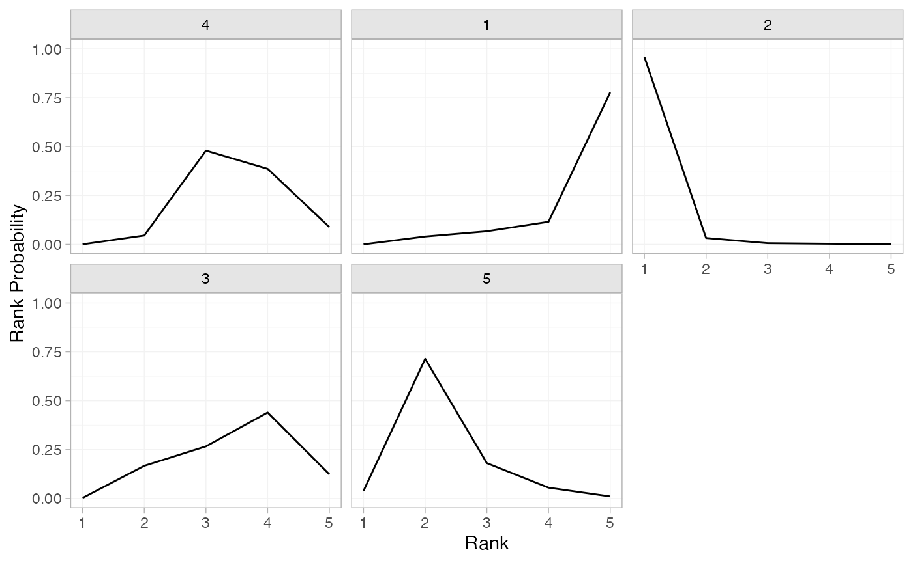
(contr_cumrankprobs <- posterior_rank_probs(contr_fit_FE, cumulative = TRUE))
#> p_rank[1] p_rank[2] p_rank[3] p_rank[4] p_rank[5]
#> d[4] 0.00 0.05 0.53 0.91 1
#> d[1] 0.00 0.04 0.11 0.22 1
#> d[2] 0.96 0.99 1.00 1.00 1
#> d[3] 0.00 0.17 0.44 0.88 1
#> d[5] 0.04 0.75 0.93 0.99 1
plot(contr_cumrankprobs)Analysis of mixed arm-based and contrast-based data
We now perform an analysis where some studies contribute arm-based data, and other contribute contrast-based data. Replicating Dias et al. (2011), we consider arm-based data from studies 1-3, and contrast-based data from studies 4-7.
studies <- parkinsons$studyn
(parkinsons_arm <- parkinsons[studies %in% 1:3, ])
#> studyn trtn y se n diff se_diff
#> 1 1 1 -1.22 0.504 54 NA 0.504
#> 2 1 3 -1.53 0.439 95 -0.31 0.668
#> 3 2 1 -0.70 0.282 172 NA 0.282
#> 4 2 2 -2.40 0.258 173 -1.70 0.382
#> 5 3 1 -0.30 0.505 76 NA 0.505
#> 6 3 2 -2.60 0.510 71 -2.30 0.718
#> 7 3 4 -1.20 0.478 81 -0.90 0.695
(parkinsons_contr <- parkinsons[studies %in% 4:7, ])
#> studyn trtn y se n diff se_diff
#> 8 4 3 -0.24 0.265 128 NA 0.265
#> 9 4 4 -0.59 0.354 72 -0.35 0.442
#> 10 5 3 -0.73 0.335 80 NA 0.335
#> 11 5 4 -0.18 0.442 46 0.55 0.555
#> 12 6 4 -2.20 0.197 137 NA 0.197
#> 13 6 5 -2.50 0.190 131 -0.30 0.274
#> 14 7 4 -1.80 0.200 154 NA 0.200
#> 15 7 5 -2.10 0.250 143 -0.30 0.320Setting up the network
We use the functions set_agd_arm() and set_agd_contrast() to set up the respective data sources within the network, and then combine together with combine_network().
mix_arm_net <- set_agd_arm(parkinsons_arm,
study = studyn,
trt = trtn,
y = y,
se = se,
sample_size = n)
mix_contr_net <- set_agd_contrast(parkinsons_contr,
study = studyn,
trt = trtn,
y = diff,
se = se_diff,
sample_size = n)
mix_net <- combine_network(mix_arm_net, mix_contr_net)
mix_net
#> A network with 3 AgD studies (arm-based), and 4 AgD studies (contrast-based).
#>
#> ------------------------------------------------------- AgD studies (arm-based) ----
#> Study Treatments
#> 1 2: 1 | 3
#> 2 2: 1 | 2
#> 3 3: 1 | 2 | 4
#>
#> Outcome type: continuous
#> -------------------------------------------------- AgD studies (contrast-based) ----
#> Study Treatments
#> 4 2: 3 | 4
#> 5 2: 3 | 4
#> 6 2: 4 | 5
#> 7 2: 4 | 5
#>
#> Outcome type: continuous
#> ------------------------------------------------------------------------------------
#> Total number of treatments: 5
#> Total number of studies: 7
#> Reference treatment is: 4
#> Network is connectedThe sample_size argument is optional, but enables the nodes to be weighted by sample size in the network plot.
Plot the network structure.
plot(mix_net, weight_edges = TRUE, weight_nodes = TRUE)Meta-analysis models
We fit both fixed effect (FE) and random effects (RE) models.
Fixed effect meta-analysis
First, we fit a fixed effect model using the nma() function with trt_effects = "fixed". We use \(\mathrm{N}(0, 100^2)\) prior distributions for the treatment effects \(d_k\) and study-specific intercepts \(\mu_j\). We can examine the range of parameter values implied by these prior distributions with the summary() method:
summary(normal(scale = 100))
#> A Normal prior distribution: location = 0, scale = 100.
#> 50% of the prior density lies between -67.45 and 67.45.
#> 95% of the prior density lies between -196 and 196.The model is fitted using the nma() function.
mix_fit_FE <- nma(mix_net,
trt_effects = "fixed",
prior_intercept = normal(scale = 100),
prior_trt = normal(scale = 100))
#> Note: Setting "4" as the network reference treatment.Basic parameter summaries are given by the print() method:
mix_fit_FE
#> A fixed effects NMA with a normal likelihood (identity link).
#> Inference for Stan model: normal.
#> 4 chains, each with iter=2000; warmup=1000; thin=1;
#> post-warmup draws per chain=1000, total post-warmup draws=4000.
#>
#> mean se_mean sd 2.5% 25% 50% 75% 97.5% n_eff Rhat
#> d[1] 0.50 0.01 0.47 -0.43 0.17 0.49 0.82 1.40 1223 1
#> d[2] -1.32 0.01 0.52 -2.33 -1.68 -1.32 -0.96 -0.31 1352 1
#> d[3] 0.04 0.01 0.32 -0.58 -0.19 0.04 0.25 0.66 2231 1
#> d[5] -0.29 0.00 0.21 -0.70 -0.43 -0.30 -0.16 0.12 3097 1
#> lp__ -4.54 0.04 1.87 -9.07 -5.58 -4.19 -3.16 -1.92 1807 1
#>
#> Samples were drawn using NUTS(diag_e) at Fri Jan 7 08:49:56 2022.
#> For each parameter, n_eff is a crude measure of effective sample size,
#> and Rhat is the potential scale reduction factor on split chains (at
#> convergence, Rhat=1).By default, summaries of the study-specific intercepts \(\mu_j\) are hidden, but could be examined by changing the pars argument:
The prior and posterior distributions can be compared visually using the plot_prior_posterior() function:
plot_prior_posterior(mix_fit_FE)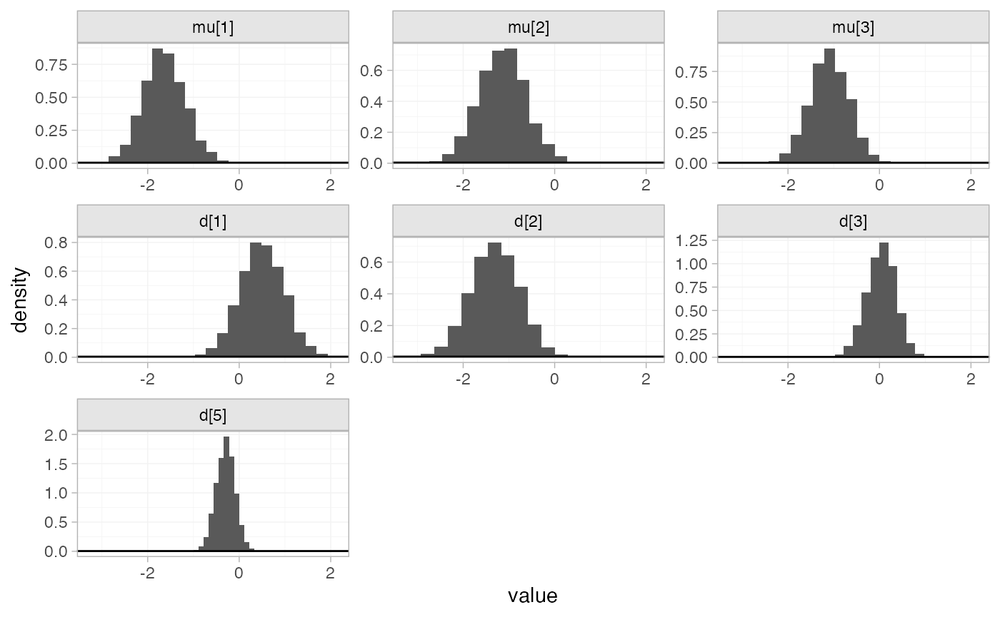
Random effects meta-analysis
We now fit a random effects model using the nma() function with trt_effects = "random". Again, we use \(\mathrm{N}(0, 100^2)\) prior distributions for the treatment effects \(d_k\) and study-specific intercepts \(\mu_j\), and we additionally use a \(\textrm{half-N}(5^2)\) prior for the heterogeneity standard deviation \(\tau\). We can examine the range of parameter values implied by these prior distributions with the summary() method:
summary(normal(scale = 100))
#> A Normal prior distribution: location = 0, scale = 100.
#> 50% of the prior density lies between -67.45 and 67.45.
#> 95% of the prior density lies between -196 and 196.
summary(half_normal(scale = 5))
#> A half-Normal prior distribution: location = 0, scale = 5.
#> 50% of the prior density lies between 0 and 3.37.
#> 95% of the prior density lies between 0 and 9.8.Fitting the RE model
mix_fit_RE <- nma(mix_net,
seed = 437219664,
trt_effects = "random",
prior_intercept = normal(scale = 100),
prior_trt = normal(scale = 100),
prior_het = half_normal(scale = 5),
adapt_delta = 0.99)
#> Note: Setting "4" as the network reference treatment.
#> Warning: There were 4 divergent transitions after warmup. See
#> https://mc-stan.org/misc/warnings.html#divergent-transitions-after-warmup
#> to find out why this is a problem and how to eliminate them.
#> Warning: Examine the pairs() plot to diagnose sampling problemsWe do see a small number of divergent transition errors, which cannot simply be removed by increasing the value of the adapt_delta argument (by default set to 0.95 for RE models). To diagnose, we use the pairs() method to investigate where in the posterior distribution these divergences are happening (indicated by red crosses):
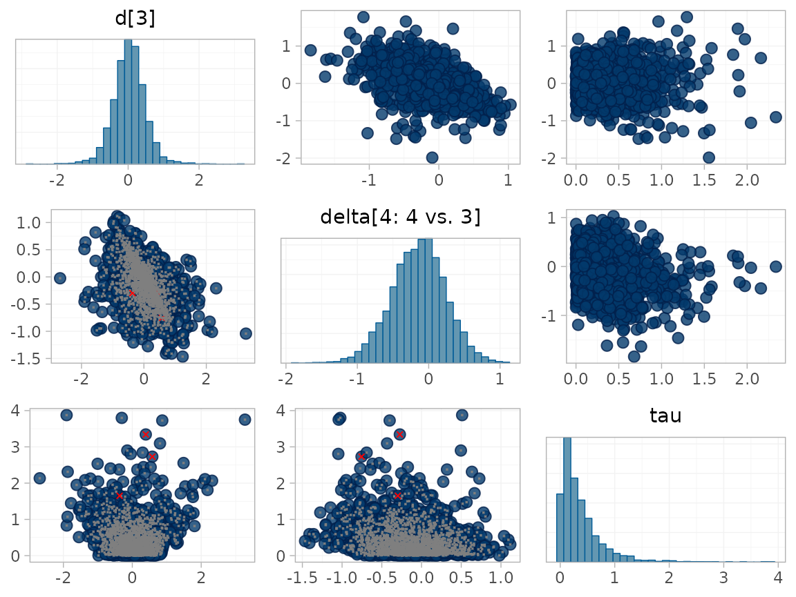
The divergent transitions occur in the upper tail of the heterogeneity standard deviation. In this case, with only a small number of studies, there is not very much information to estimate the heterogeneity standard deviation and the prior distribution may be too heavy-tailed. We could consider a more informative prior distribution for the heterogeneity variance to aid estimation.
Basic parameter summaries are given by the print() method:
mix_fit_RE
#> A random effects NMA with a normal likelihood (identity link).
#> Inference for Stan model: normal.
#> 4 chains, each with iter=2000; warmup=1000; thin=1;
#> post-warmup draws per chain=1000, total post-warmup draws=4000.
#>
#> mean se_mean sd 2.5% 25% 50% 75% 97.5% n_eff Rhat
#> d[1] 0.53 0.02 0.61 -0.69 0.14 0.53 0.90 1.73 1490 1.00
#> d[2] -1.31 0.02 0.69 -2.66 -1.73 -1.30 -0.89 0.06 1614 1.00
#> d[3] 0.05 0.01 0.48 -0.88 -0.23 0.05 0.31 1.05 2322 1.00
#> d[5] -0.29 0.01 0.42 -1.17 -0.50 -0.30 -0.10 0.60 2196 1.00
#> lp__ -10.79 0.10 3.26 -17.96 -12.82 -10.48 -8.47 -5.21 1130 1.00
#> tau 0.40 0.01 0.40 0.01 0.13 0.28 0.52 1.53 724 1.01
#>
#> Samples were drawn using NUTS(diag_e) at Fri Jan 7 08:50:09 2022.
#> For each parameter, n_eff is a crude measure of effective sample size,
#> and Rhat is the potential scale reduction factor on split chains (at
#> convergence, Rhat=1).By default, summaries of the study-specific intercepts \(\mu_j\) and study-specific relative effects \(\delta_{jk}\) are hidden, but could be examined by changing the pars argument:
The prior and posterior distributions can be compared visually using the plot_prior_posterior() function:
plot_prior_posterior(mix_fit_RE)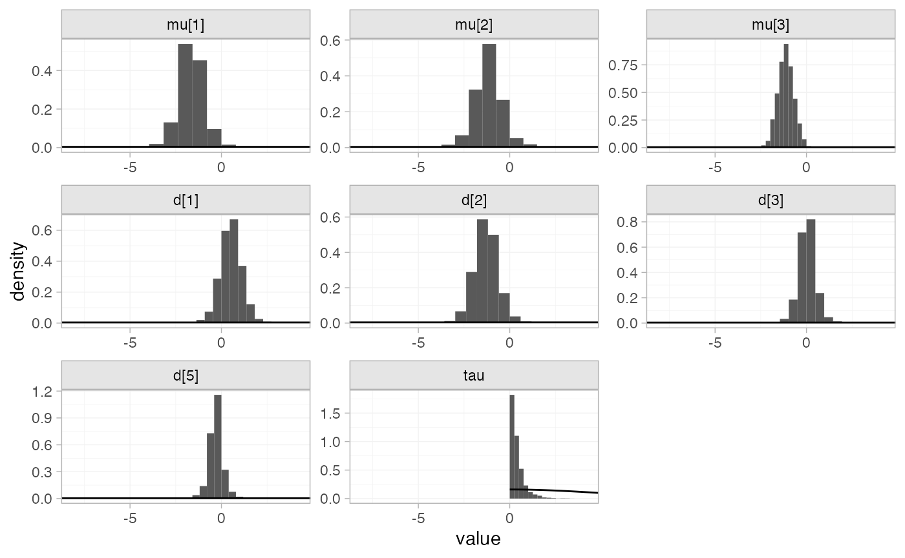
Model comparison
Model fit can be checked using the dic() function:
(mix_dic_FE <- dic(mix_fit_FE))
#> Residual deviance: 9.1 (on 11 data points)
#> pD: 6.8
#> DIC: 15.9
(mix_dic_RE <- dic(mix_fit_RE))
#> Residual deviance: 9.7 (on 11 data points)
#> pD: 8.5
#> DIC: 18.2Both models fit the data well, having posterior mean residual deviance close to the number of data points. The DIC is similar between models, so we choose the FE model based on parsimony.
We can also examine the residual deviance contributions with the corresponding plot() method.
plot(mix_dic_FE)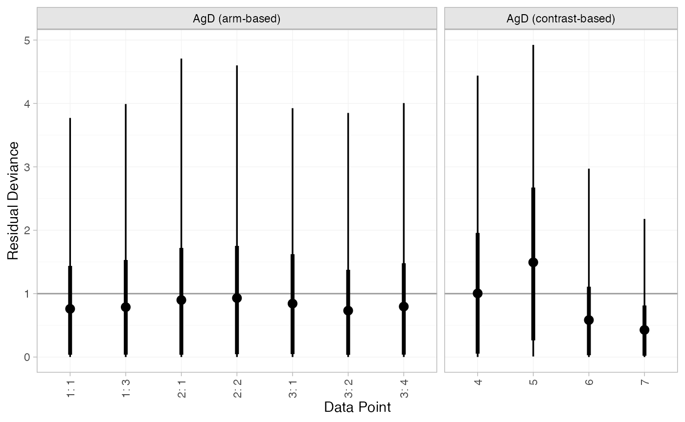
plot(mix_dic_RE)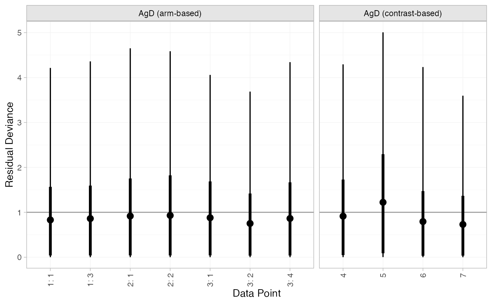
Further results
For comparison with Dias et al. (2011), we can produce relative effects against placebo using the relative_effects() function with trt_ref = 1:
(mix_releff_FE <- relative_effects(mix_fit_FE, trt_ref = 1))
#> mean sd 2.5% 25% 50% 75% 97.5% Bulk_ESS Tail_ESS Rhat
#> d[4] -0.50 0.47 -1.40 -0.82 -0.49 -0.17 0.43 1274 1999 1
#> d[2] -1.82 0.33 -2.46 -2.04 -1.82 -1.59 -1.15 5684 3358 1
#> d[3] -0.46 0.47 -1.40 -0.78 -0.47 -0.15 0.49 2261 2677 1
#> d[5] -0.79 0.52 -1.80 -1.15 -0.80 -0.44 0.22 1470 2371 1
plot(mix_releff_FE, ref_line = 0)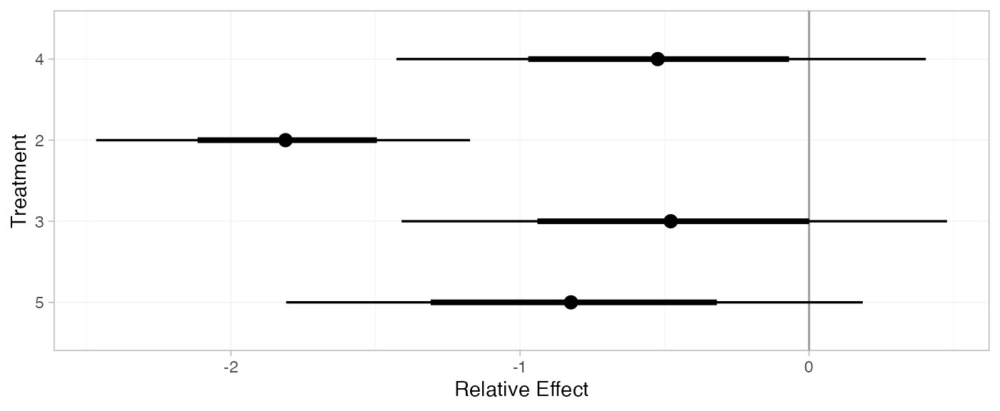
(mix_releff_RE <- relative_effects(mix_fit_RE, trt_ref = 1))
#> mean sd 2.5% 25% 50% 75% 97.5% Bulk_ESS Tail_ESS Rhat
#> d[4] -0.53 0.61 -1.73 -0.90 -0.53 -0.14 0.69 1549 1721 1
#> d[2] -1.83 0.51 -2.87 -2.13 -1.84 -1.54 -0.84 4042 2535 1
#> d[3] -0.48 0.66 -1.74 -0.88 -0.49 -0.07 0.78 2691 2108 1
#> d[5] -0.82 0.76 -2.27 -1.27 -0.83 -0.37 0.71 1513 1435 1
plot(mix_releff_RE, ref_line = 0)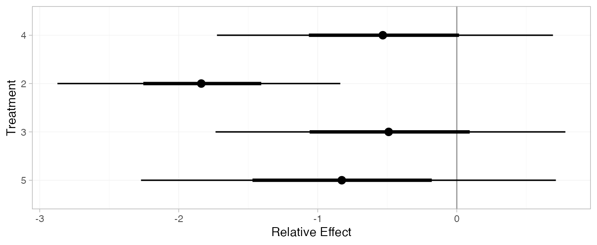
Following Dias et al. (2011), we produce absolute predictions of the mean off-time reduction on each treatment assuming a Normal distribution for the outcomes on treatment 1 (placebo) with mean \(-0.73\) and precision \(21\). We use the predict() method, where the baseline argument takes a distr() distribution object with which we specify the corresponding Normal distribution, and we specify trt_ref = 1 to indicate that the baseline distribution corresponds to treatment 1. (Strictly speaking, type = "response" is unnecessary here, since the identity link function was used.)
mix_pred_FE <- predict(mix_fit_FE,
baseline = distr(qnorm, mean = -0.73, sd = 21^-0.5),
type = "response",
trt_ref = 1)
mix_pred_FE
#> mean sd 2.5% 25% 50% 75% 97.5% Bulk_ESS Tail_ESS Rhat
#> pred[4] -1.22 0.52 -2.23 -1.57 -1.22 -0.87 -0.19 1421 2225 1
#> pred[1] -0.72 0.22 -1.14 -0.87 -0.72 -0.58 -0.30 3607 3552 1
#> pred[2] -2.54 0.39 -3.30 -2.80 -2.54 -2.28 -1.76 4755 3768 1
#> pred[3] -1.18 0.52 -2.19 -1.54 -1.19 -0.83 -0.17 2371 2548 1
#> pred[5] -1.51 0.56 -2.61 -1.89 -1.52 -1.14 -0.40 1612 2458 1
plot(mix_pred_FE)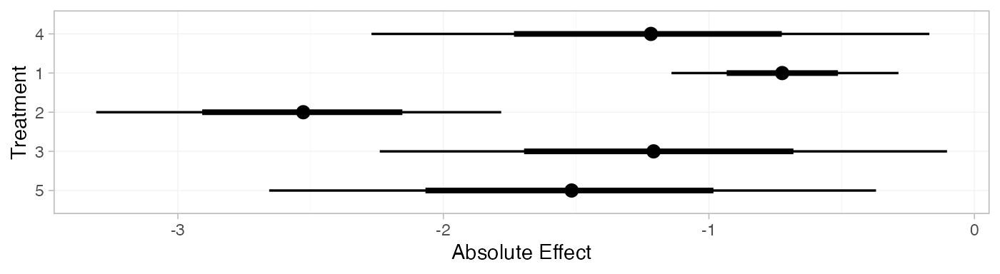
mix_pred_RE <- predict(mix_fit_RE,
baseline = distr(qnorm, mean = -0.73, sd = 21^-0.5),
type = "response",
trt_ref = 1)
mix_pred_RE
#> mean sd 2.5% 25% 50% 75% 97.5% Bulk_ESS Tail_ESS Rhat
#> pred[4] -1.26 0.65 -2.54 -1.66 -1.25 -0.84 0.00 1618 1881 1
#> pred[1] -0.73 0.22 -1.17 -0.88 -0.73 -0.58 -0.31 3923 3771 1
#> pred[2] -2.56 0.55 -3.69 -2.91 -2.56 -2.23 -1.48 4009 2874 1
#> pred[3] -1.21 0.70 -2.57 -1.65 -1.21 -0.77 0.10 2651 2137 1
#> pred[5] -1.55 0.79 -3.08 -2.03 -1.56 -1.08 0.00 1605 1368 1
plot(mix_pred_RE)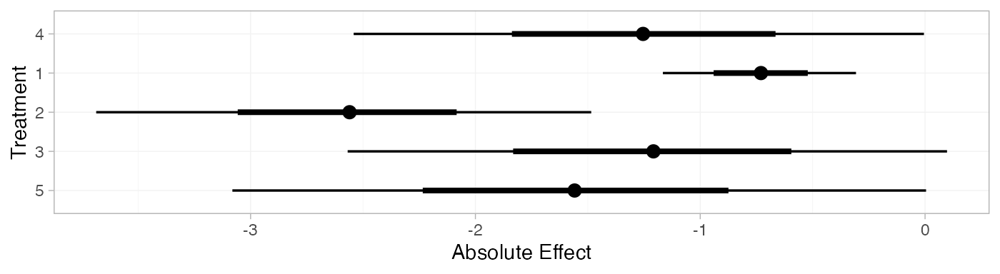
If the baseline argument is omitted, predictions of mean off-time reduction will be produced for every arm-based study in the network based on their estimated baseline response \(\mu_j\):
mix_pred_FE_studies <- predict(mix_fit_FE, type = "response")
mix_pred_FE_studies
#> ---------------------------------------------------------------------- Study: 1 ----
#>
#> mean sd 2.5% 25% 50% 75% 97.5% Bulk_ESS Tail_ESS Rhat
#> pred[1: 4] -1.63 0.45 -2.53 -1.93 -1.63 -1.33 -0.74 1944 2554 1
#> pred[1: 1] -1.13 0.43 -1.96 -1.42 -1.13 -0.83 -0.27 3542 3134 1
#> pred[1: 2] -2.95 0.52 -3.92 -3.30 -2.95 -2.60 -1.90 3426 3094 1
#> pred[1: 3] -1.59 0.39 -2.36 -1.85 -1.59 -1.34 -0.84 3708 3132 1
#> pred[1: 5] -1.92 0.50 -2.91 -2.25 -1.92 -1.58 -0.94 1959 2377 1
#>
#> ---------------------------------------------------------------------- Study: 2 ----
#>
#> mean sd 2.5% 25% 50% 75% 97.5% Bulk_ESS Tail_ESS Rhat
#> pred[2: 4] -1.13 0.51 -2.11 -1.49 -1.13 -0.79 -0.16 1298 2118 1
#> pred[2: 1] -0.64 0.26 -1.13 -0.81 -0.63 -0.46 -0.14 4851 3491 1
#> pred[2: 2] -2.45 0.23 -2.91 -2.61 -2.45 -2.30 -1.99 5347 3744 1
#> pred[2: 3] -1.10 0.52 -2.12 -1.45 -1.09 -0.75 -0.08 2181 2728 1
#> pred[2: 5] -1.43 0.55 -2.48 -1.80 -1.43 -1.06 -0.35 1420 2068 1
#>
#> ---------------------------------------------------------------------- Study: 3 ----
#>
#> mean sd 2.5% 25% 50% 75% 97.5% Bulk_ESS Tail_ESS Rhat
#> pred[3: 4] -1.10 0.42 -1.90 -1.38 -1.11 -0.81 -0.28 1779 2576 1
#> pred[3: 1] -0.60 0.36 -1.30 -0.84 -0.60 -0.35 0.10 4343 3088 1
#> pred[3: 2] -2.42 0.38 -3.17 -2.66 -2.41 -2.16 -1.68 3626 2831 1
#> pred[3: 3] -1.06 0.46 -1.95 -1.37 -1.06 -0.74 -0.17 2744 2788 1
#> pred[3: 5] -1.39 0.47 -2.30 -1.71 -1.40 -1.07 -0.47 1920 2547 1
plot(mix_pred_FE_studies)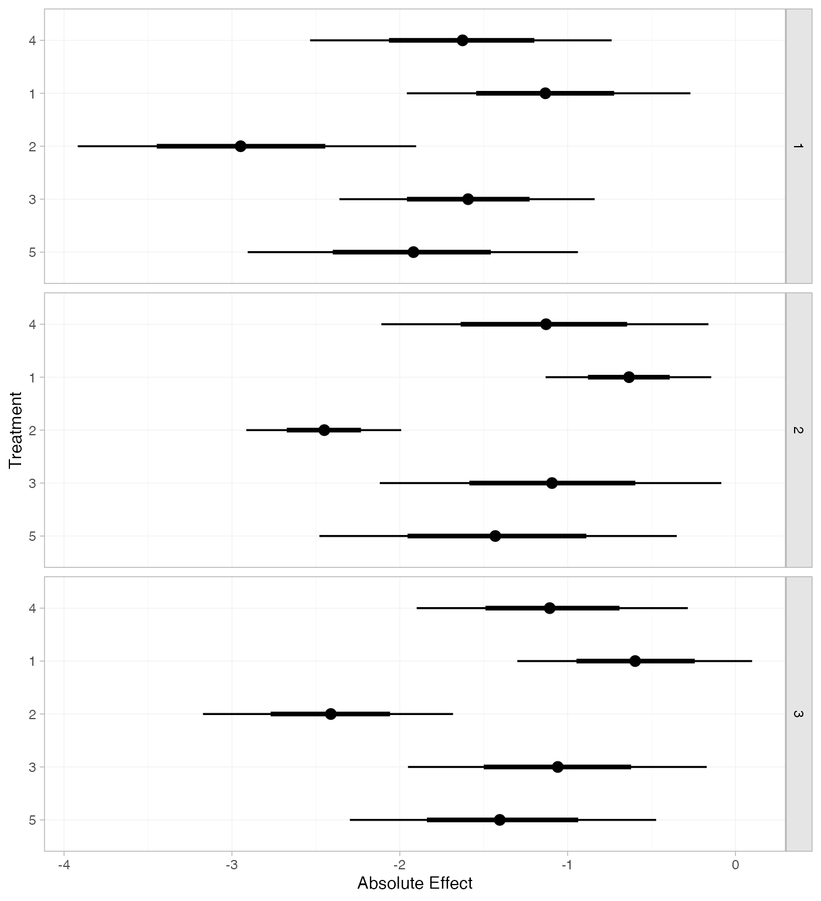
We can also produce treatment rankings, rank probabilities, and cumulative rank probabilities.
(mix_ranks <- posterior_ranks(mix_fit_FE))
#> mean sd 2.5% 25% 50% 75% 97.5% Bulk_ESS Tail_ESS Rhat
#> rank[4] 3.52 0.72 2 3 3 4 5 2034 NA 1
#> rank[1] 4.62 0.79 2 5 5 5 5 2043 NA 1
#> rank[2] 1.04 0.24 1 1 1 1 2 2359 2422 1
#> rank[3] 3.52 0.91 2 3 4 4 5 2879 NA 1
#> rank[5] 2.29 0.68 1 2 2 2 4 2311 2581 1
plot(mix_ranks)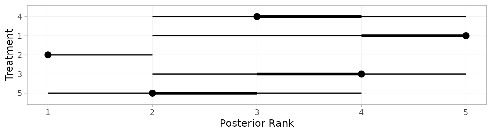
(mix_rankprobs <- posterior_rank_probs(mix_fit_FE))
#> p_rank[1] p_rank[2] p_rank[3] p_rank[4] p_rank[5]
#> d[4] 0.00 0.04 0.48 0.39 0.09
#> d[1] 0.00 0.04 0.07 0.11 0.78
#> d[2] 0.97 0.03 0.01 0.00 0.00
#> d[3] 0.00 0.16 0.27 0.44 0.12
#> d[5] 0.03 0.73 0.17 0.06 0.01
plot(mix_rankprobs)
(mix_cumrankprobs <- posterior_rank_probs(mix_fit_FE, cumulative = TRUE))
#> p_rank[1] p_rank[2] p_rank[3] p_rank[4] p_rank[5]
#> d[4] 0.00 0.04 0.53 0.91 1
#> d[1] 0.00 0.04 0.11 0.22 1
#> d[2] 0.97 0.99 1.00 1.00 1
#> d[3] 0.00 0.16 0.43 0.88 1
#> d[5] 0.03 0.76 0.93 0.99 1
plot(mix_cumrankprobs)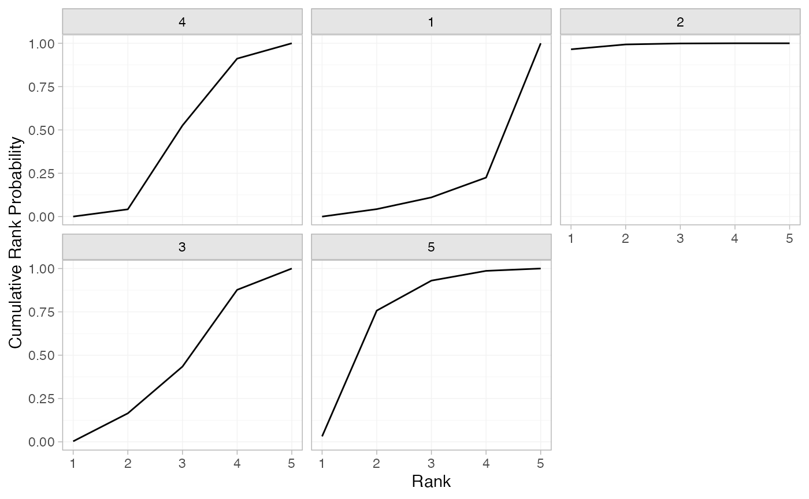
References
Dias, S., N. J. Welton, A. J. Sutton, and A. E. Ades. 2011. “NICE DSU Technical Support Document 2: A Generalised Linear Modelling Framework for Pair-Wise and Network Meta-Analysis of Randomised Controlled Trials.” National Institute for Health and Care Excellence. http://nicedsu.org.uk/.